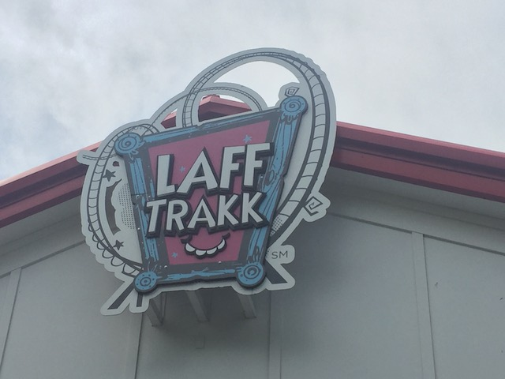

| |
Laff Track Review

We're here at Hersheypark, where we'll be reviewing Laff Track. The park's spinning coaster. The ride its just a standard Spinning Coaster. However, what makes this ride special and unique is the theming. This is an indoor coaster, and....its got all this carnival theming that really makes it a lot of fun. Even the line is enjoyable. OK. Not enjoyable. But if I were to make a Top 10 Lines List (Maybe someday), this would unquestionably make it. All right. That's enough talking. Let's get riding. We get in the cars, pull down the lap bar, and off we go. We head around a turn and begin climbing the lifthill, getting a nice view of a bunch of bright colors and a giant head. Ahh! Creepy! But it really helps with the ride. We head around a turn, through some straight track. We then head down a curved drop to the bottom. We don't get much spinning action here, but its a fun drop and delivers some speed. Also, the theming really helps. You just go through these doors. The spinning may not be that good. But the theming is really that good! You then head up a curved hill, it doesn't cause us to spin much, but it's still enjoyable. And hey! All the lights just makes it better!. We then head into some trims before dropping down and getting more action. We then head down another drop, through one of those vertical horseshoe elements, and then around another upward curve into more brakes. Hey, at least we get some spinning action in that. We then head around another drop, around another curve through some more S shaped track that should spin us or give us some laterals, but doesn't. At least the rings makes things better. Go through more brakes, down another small drop, through more curves and into a downward helix. Hello Fortune Teller we see in the middle. Hey, more spinning action. We then head up a small hill, around more curves, and into the brake run. Maybe I just hit this on a bad day, but Laff Track barely spun for me at all. But it was still a ton of fun both due to being a fun overall ride. But also due to the theming. If this thing spun like crazy, then it can REALLY shine. Hopefully it spins a lot more next time. =)
7/10
Location: Hersheypark
Opened: 2015
Built by: Maurer Söhne
Last Ridden: June 25, 2021
I have ridden this exact same ride at the following parks.
Lagoon
Santa Cruz Beach Boardwalk
Waldameer
Laff Track Photos

Home
|